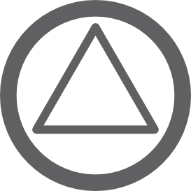

Доступно только с персонального компьютера
Симуляция потока жидкости
Запустить
Добавить манометр

Расход
м³/ч
л/мин
1.00
(16.67 л/мин)
Напор
4.0
м в. ст.
Вн. диаметр трубы
20
мм
Длина трубы
40.00
м
Напор
Скорость потока
Вн. диаметр трубы
Длина трубы
Сопротивление участка
Максимально возможный расход
Режим течения / Число Рейнольдса
⚙
График насоса
25/6
1
2
3
Скорость
⚙
Шероховатость труб (мм)
Выберите тип трубы
Новая стальная труба
Бывшая в употреблении стальная труба
Старая стальная труба
Пластиковая труба
Чугунная труба
Бетонная труба
0.1
мм
Температура жидкости (°C)
20
°C
Тип жидкости и вязкость
Вода
Этиленгликоль 40%
Этиленгликоль 50%
Пропиленгликоль 40%
Пропиленгликоль 50%
Вязкость:
—
м²/с
Диаметр сужения
50
мм
Длина сужения
20
мм